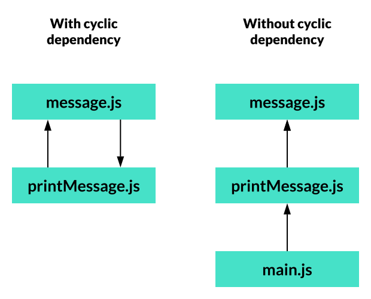
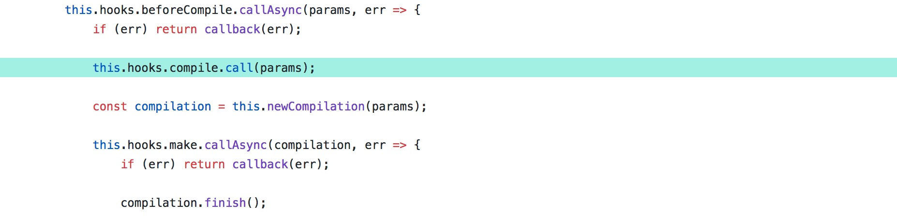
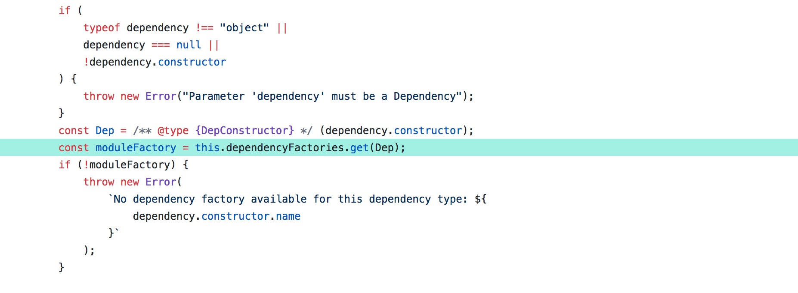
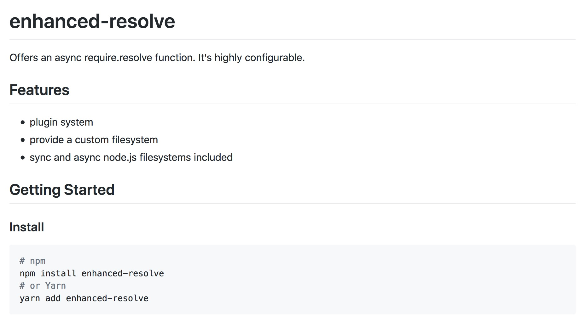
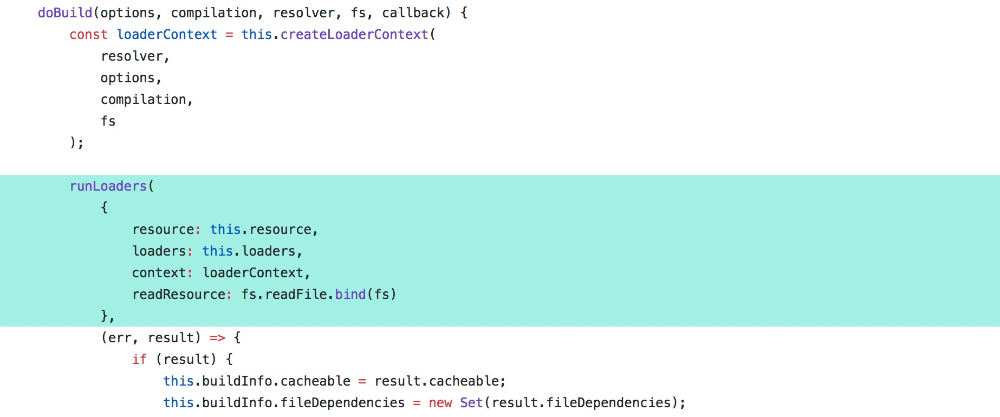
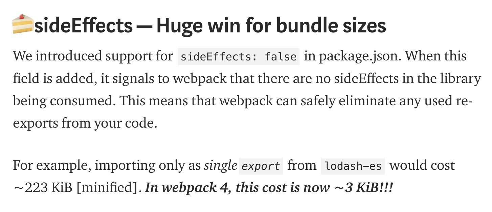
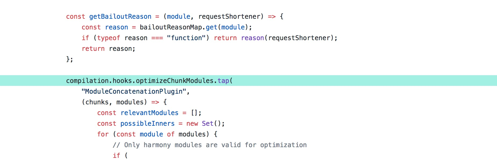

layout: true class: theme-whiskey, slides-left --- name: cover # Webpack deep dive Johannes Ewald<br> Peerigon GmbH<br> [@jhnnns](https://twitter.com/jhnnns) <img id="slide-cover-img" src="./assets/peerigon-logo.png" width="400"> --- <img src="./assets/slide-2.svg" width="1200" style="position: absolute; top: 0; left: 0;"> --- layout: true class: theme-whiskey, slides-centered --- <img src="./assets/peerigon-logo.png" width="500"> --- <img src="./assets/webpack-logo.svg" width="600"> --- ### 1. What is webpack? -- ### 2. How does it work? -- ### 3. How do you get the most out of it? --- class: slides-chapter ## What is webpack? --- layout: true class: slides-centered --- ### Webpack is just a module bundler which<br>turns a dependency graph into<br>an optimized chunk graph. ### <span style="visibility: hidden;">;)</span> --- ### Webpack is just a module bundler which<br>turns a dependency graph into<br>an optimized chunk graph. ### ;) --- ### Webpack is just a <span style="background: #46e1c8">module bundler</span> which<br>turns a dependency graph into<br>an optimized chunk graph. ### ;) --- ### Webpack is just a <span style="background: #46e1c8">module bundler</span> which<br>turns a <span style="background: #46e1c8">dependency graph</span> into<br>an optimized chunk graph. ### ;) --- ### Webpack is just a <span style="background: #46e1c8">module bundler</span> which<br>turns a <span style="background: #46e1c8">dependency graph</span> into<br>an <span style="background: #46e1c8">optimized chunk graph</span>. ### ;) --- ### <span style="opacity: 0.2">Webpack is just a </span><span style="background: #46e1c8">module bundler</span> --- ### Without a module bundler... .slides-content[ .slides-columns[ ``` // message.js const message = "Hello World"; printMessage(); ``` ``` // printMessage.js function printMessage() { console.log(message); } ``` ] - What if `message.js` is included before `printMessage.js`? - What if multiple files use the variable name `message`? ] --- ### Without a module bundler... .slides-content[ - the `<script>` order is important - top-level variables and functions are global As your application grows, this becomes a problem. ] --- .slides-content[ To address this problem, the JavaScript community came up with a module system called **[AMD](https://en.wikipedia.org/wiki/Asynchronous_module_definition)**. <img src="assets/require-js.svg" height="200" style="display: block; margin: 4rem auto;"/> The most popular implementation of AMD is [require.js](https://requirejs.org/). ] --- .slides-content[ ``` define( ); ``` ] .slides-caption[ require.js provides a global function `define()` which can be used to create a module. ] --- .slides-content[ ``` define( "a", // module id ); ``` ] .slides-caption[ As first argument, `define()` takes a unique id for the module. ] --- .slides-content[ ``` define( "a", // module id ["b", "c"], // list of required modules ); ``` ] .slides-caption[ As second argument, `define()` takes a list of module ids that are required by this module.<br> They need to be loaded beforehand. ] --- .slides-content[ ``` define( "a", // module id ["b", "c"], // list of required modules function (b, c) { // implementation // ... } ); ``` ] .slides-caption[ As third argument, there is the actual implementation.<br> The **function wrapper** ensures that values inside the module can not be accessed from the outside.<br> Required modules are passed as argument to the function. ] --- .slides-content[ ``` define( "a", // module id ["b", "c"], // list of required modules function (b, c) { // implementation // ... return someValues; // optional exports } ); ``` ] .slides-caption[ The module may export values for other modules as return value.<br> ] --- .slides-columns[ ``` define( "message.js", ["printMessage.js"], function (printMessage) { const message = "Hello World"; printMessage(); return message; } ); ``` ``` define( "printMessage.js", ["message.js"], function (message) { function printMessage() { console.log(message); } return printMessage; } ); ``` ] .slides-caption[ Example as AMD module. ] --- .slides-columns[ ``` define( "message.js", ["printMessage.js"], function (printMessage) { const message = "Hello World"; printMessage(); return message; } ); ``` ``` define( "printMessage.js", ["message.js"], function (message) { function printMessage() { console.log(message); } return printMessage; } ); ``` ] .slides-caption[ This example would not execute properly because it has a **cyclic dependency**:<br> `message.js` requires `printMessage.js` which requires `message.js`. ] --- .slides-columns[ ``` define( "message.js", ["printMessage.js"], function (printMessage) { const message = "Hello World"; printMessage(); // <-- execute return message; // <--- export } ); ``` ``` define( "printMessage.js", ["message.js"], function (message) { function printMessage() { console.log(message); } return printMessage; } ); ``` ] .slides-caption[ `message.js` does two things: - execute side-effect `printMessage` - export `message` ] --- .slides-columns[ ``` define( "message.js", [], function () { const message = "Hello World"; return message; } ); ``` ``` define( "printMessage.js", ["message.js"], function (message) { function printMessage() { console.log(message); } return printMessage; } ); ``` ``` define( "main.js", ["printMessage.js"], function (printMessage) { printMessage(); } ); ``` ] .slides-caption[ Implementation without cyclic dependency: - module `message.js` exports value `message` - module `main.js` executes `printMessage` ] --- Drawn as a diagram:  --- ```html <script data-main="main.js" src="require.js"></script> ``` .slides-caption[ To execute this code with require.js, we point it<br> to our `main.js` module via the `data-main` attribute. ] --- <div style="width: 250px; height: 64px; background: url(assets/dep-graph-amd.svg); background-size: 500px; background-position: -250px -339px;"></div> .slides-caption[ require.js starts to **resolve** all required dependencies by executing each `define()` ] --- <div style="width: 250px; height: 167px; background: url(assets/dep-graph-amd.svg); background-size: 500px; background-position: -250px -226px;"></div> .slides-caption[ Dependencies are loaded **asynchronously** from the server. ] --- <div style="width: 250px; height: 306px; background: url(assets/dep-graph-amd.svg); background-size: 500px; background-position: -250px -97px;"></div> .slides-caption[ And so on. ] --- <div style="width: 250px; height: 306px; background: url(assets/dep-graph-amd.svg); background-size: 500px; background-position: -250px -97px;"></div> .slides-caption[ Once all dependencies have been resolved, it starts to **evaluate** each module function wrapper from top to bottom. ] --- <div style="width: 250px; height: 306px; background: url(assets/dep-graph-amd.svg); background-size: 500px; background-position: -250px -97px;"> <div style="height: 65px; background: url(assets/dep-graph-amd.svg); background-size: 500px; background-position: -250px -97px;"> <div style="height: 100%; background: #2f1e1c; mix-blend-mode: hue"></div> </div> </div> .slides-caption[ Once all dependencies have been resolved, it starts to **evaluate** each module function wrapper from top to bottom. ] --- <div style="width: 250px; height: 306px; background: url(assets/dep-graph-amd.svg); background-size: 500px; background-position: -250px -97px;"> <div style="height: 180px; background: url(assets/dep-graph-amd.svg); background-size: 500px; background-position: -250px -97px;"> <div style="height: 100%; background: #2f1e1c; mix-blend-mode: hue"></div> </div> </div> .slides-caption[ Once all dependencies have been resolved, it starts to **evaluate** each module function wrapper from top to bottom. ] --- <div style="width: 250px; height: 306px; background: url(assets/dep-graph-amd.svg); background-size: 500px; background-position: -250px -97px;"> <div style="height: 100%; background: #2f1e1c; mix-blend-mode: hue"></div> </div> .slides-caption[ Once all dependencies have been resolved, it starts to **evaluate** each module function wrapper from top to bottom. ] --- <img src="assets/dep-graph-amd-interleaved.svg" height="400" /> .slides-caption[ Both steps—resolve and evaluate—*can* be interleaved. ] --- .slides-content[ <img src="assets/nodejs-logo.jpg" width="400" style="margin: auto"/> Roughly at the same time, Node.js came up with a different module system called **CommonJS**. ] --- .slides-columns[ ``` // message.js const message = "Hello World"; module.exports = message; ``` ``` // printMessage.js const message = require("./message.js"); function printMessage() { console.log(message); } module.exports = printMessage; ``` ``` // main.js const printMessage = require("./printMessage.js"); printMessage(); ``` ] .slides-caption[ Example as CommonJS module. ] --- <div style="width: 250px; height: 64px; background: url(assets/dep-graph-cjs.svg); background-size: 278px; background-position: 0 -298px;"></div> .slides-caption[ Node.js starts to **evaluate** the first module.<br> ] --- <div style="width: 250px; height: 200px; background: url(assets/dep-graph-cjs.svg); background-size: 278px; background-position: 0 -159px;"></div> .slides-caption[ Calling `require()` stops the current evaluation, loads the required module **synchronously** from the file system and **evaluates** it.<br> ] --- <div style="width: 250px; height: 340px; background: url(assets/dep-graph-cjs.svg); background-size: 278px; background-position: 0 -19px;"></div> .slides-caption[ And so on. ] --- <div style="width: 250px; height: 340px; background: url(assets/dep-graph-cjs.svg); background-size: 278px; background-position: 0 -19px;"> <div style=" height: 77px; background: url(assets/dep-graph-cjs-evaluated.svg); background-size: 278px; background-position: 0 -19px;"></div> </div> .slides-caption[ Once all dependencies have been resolved, the evaluation stack unwinds like a callstack<br>(because it *is* a callstack). ] --- <div style="width: 250px; height: 340px; background: url(assets/dep-graph-cjs.svg); background-size: 278px; background-position: 0 -19px;"> <div style=" height: 237px; background: url(assets/dep-graph-cjs-evaluated.svg); background-size: 278px; background-position: 0 -19px;"></div> </div> .slides-caption[ Once all dependencies have been resolved, the evaluation stack unwinds like a callstack<br>(because it *is* a callstack). ] --- <div style="width: 250px; height: 340px; background: url(assets/dep-graph-cjs.svg); background-size: 278px; background-position: 0 -19px;"> <div style=" height: 340px; background: url(assets/dep-graph-cjs-evaluated.svg); background-size: 278px; background-position: 0 -19px;"></div> </div> .slides-caption[ Once all dependencies have been resolved, the evaluation stack unwinds like a callstack<br>(because it *is* a callstack). ] --- .slides-content[ Node.js achieves the module scope by wrapping each source file into a function wrapper before evaluating it: ``` (function (exports, require, module, __filename, __dirname) { /* YOUR CODE */ })(module.exports, require, module, filename, dirname); ``` ] --- .slides-content[ <img src="assets/npm-logo.svg" height="150" style="margin: auto" /> Due to Node.js' popularity, a lot of JavaScript is published as CommonJS on [NPM](https://www.npmjs.com/). ] --- ### Two notes on CommonJS --- #### 1. .slides-content[ CommonJS allow dynamic imports... ``` const locale = require("./locales/" + language); ``` ...or dynamic exports... ``` if (Math.random() < 0.5) { module.exports.hello = true; } else { module.exports.world = true; } ``` ] --- #### 2. .slides-content[ CommonJS was invented for server-side JavaScript. It requires the modules to be loaded synchronously which is impractical for the browser. ] --- Two incompatible module systems emerged... --- <img src="assets/xkcd-standards.png" width="500" /> .slides-footnote[ https://xkcd.com/927/ ] --- .slides-content[ <img src="assets/js-logo.svg" height="200" style="margin: auto" /> As a response, ECMAScript 2015 introduced a native module syntax: the ECMAScript module (ESM). ] --- .slides-content[ ``` // message.js export const message = "Hello World"; ``` ``` // printMessage.js import {message} from "./message.js"; export function printMessage() { console.log(message); } ``` ``` // main.js import {printMessage} from "./printMessage.js"; printMessage(); ``` ] .slides-caption[ Example as ESM. ] --- The ESM can be loaded by modern browsers via: ```html <script type="module" src="main.js"></script> ``` --- ### Four notes about ESMs --- #### 1. <img src="assets/esm-spec.jpg" height="300" style="margin: 3rem" /> .slides-caption[ The [specification](http://www.ecma-international.org/ecma-262/6.0/#sec-hostresolveimportedmodule) leaves the actual module resolution up to the implementation. ] --- #### 2. .slides-content[ The order of evaluation is mostly unspecified. The only guarantee: all dependencies must have been evaluated before the module itself is evaluated. ] --- #### 3. .slides-content[ ESMs imports are **live bindings**: .slides-columns[ .col[ ``` export let message = "hello" setTimeout(() => { message = "world"; }, 1000); ``` ] .col[ ``` import {message} from "./message.js"; console.log(message); // "hello" setTimeout(() => { console.log(message); // "world" }, 2000) ``` ] ] ] --- #### 3. .slides-content[ Compare with CommonJS: .slides-columns[ .col[ ``` let message = "hello"; module.exports = message; setTimeout(() => { message = "world"; }, 1000); ``` ] .col[ ``` const message = require("./message.js"); console.log(message); // "hello" setTimeout(() => { console.log(message); // "hello" }, 2000) ``` ] ] ] --- #### 4. .slides-content[ The module syntax guarantees that module imports and exports are statically analyzable. ``` import {locale} from "./locales/" + language; // <--- SyntaxError ``` ] --- ### Comparison .slides-content[ | AMD | CommonJS | ESM :------|:----|:---------|:--- **Analyzable** | With limitations | With limitations | Yes **Resolving** | Asynchronous | Synchronous | Unspecified **Linking** | Copy by value | Copy by value | Live binding **Scoping** | Function wrapper | Function wrapper | New language environment **Evaluation order** | I/O dependent | Execution dependent | Mostly unspecified ] --- Interoperability is a mess. <img src="assets/man-crying.gif" width="400" /> <small style="position: relative; top: -1.5rem;"><a href="https://twitter.com/bradleymeck">@bradleymeck</a> implementing ESMs for Node.js</small> --- .slides-content[ And there's an additional problem: All three module systems are slow to initialize when a lot of modules need to be loaded. ] --- .slides-content[ This is due to the **roundtrip problem**: <div style="background-image: url(assets/roundtrip.svg); width: 362px; height: 380px; background-size: 100%; background-position: 0 -46px; margin: auto"></div> ] --- ### Module bundlers to the rescue! .slides-columns[ <img src="assets/browserify-logo.png" height="100"> <img src="assets/webpack-logo.svg" height="120"> ] .slides-columns[ <img src="assets/rollup-logo.png" height="100"> <img src="assets/parcel-logo.png" height="100"> ] --- Module bundlers... ...**analyze JavaScript modules** by reading their source code...<br> ...to generate **compatible and efficient script JavaScript files** (bundle). --- Module bundlers leverage the fact that all<br>module systems share the same **mental model**: - A module has a **unique id** - Modules reference other modules<br>as dependency via **specifiers** - A module specifier can be resolved to a module id --- This model is called the **dependency graph**. --- A dependency graph can be simple... <img src="assets/dep-graph-simple.svg" height="450"> --- ...or complex... <img src="assets/dep-graph-complex.png" height="450"> --- ...or **very** complex. <img src="assets/dep-graph-very-complex.png" height="450"> --- .slides-content[ Module bundlers... ...try to gather as much information as possible about the dependency graph in order to apply **clever optimizations**. ] --- Module bundlers... ...try to do as much as possible **on build time**...<br> ...so that there's less to do **on runtime**. --- ### <span style="opacity: 0.2">Webpack is just a </span><span style="background: #46e1c8">module bundler</span> <span style="opacity: 0.2">which<br>turns a </span><span style="background: #46e1c8">dependency graph</span> <span style="opacity: 0.2">into<br>an optimized chunk graph.</span> --- class: slides-chapter, theme-whiskey ## How does webpack work? --- layout: true class: slides-centered --- .slides-content[ The best way to understand webpack is to follow the steps webpack takes when someone runs: ``` webpack ``` ] --- .slides-content[ <a href="https://github.com/webpack/webpack/blob/5c5e902c8e89afeb51ad130f12a908b89d627fc5/lib/webpack.js#L26-L32">`lib/webpack.js`</a> <img src="assets/webpack-step-1.jpg" width="700" /> .slides-caption[ **Step 1:** Validate the webpack config. ] ] --- .slides-content[ <a href="https://github.com/webpack/webpack/blob/5c5e902c8e89afeb51ad130f12a908b89d627fc5/lib/webpack.js#L39">`lib/webpack.js`</a> <img src="assets/webpack-step-2.jpg" width="700" /> .slides-caption[ **Step 2:** Create `Compiler` instance. ] ] --- ### `Compiler` - Owns the webpack configuration - Owns one or multiple `compilations` - Kicks off the actual `compilation` process - Is responsible for writing (emitting) the output files - Stays alive in `watch` mode --- .slides-content[ <a href="https://github.com/webpack/webpack/blob/5c5e902c8e89afeb51ad130f12a908b89d627fc5/lib/webpack.js#L70">`lib/webpack.js`</a> <img src="assets/webpack-step-3.jpg" width="700" /> .slides-caption[ **Step 3:** Kick off a compilation by calling `compiler.run` ] ] --- .slides-content[ <a href="https://github.com/webpack/webpack/blob/5c5e902c8e89afeb51ad130f12a908b89d627fc5/lib/Compiler.js#L532">`lib/Compiler.js`</a>  .slides-caption[ **Step 4:** Trigger compilation lifecycle hooks ] ] --- .slides-content[ Everything inside webpack is built of plugins which rely on a common interface, called [Tapable](https://github.com/webpack/tapable): <img src="assets/webpack-tapable.jpg" width="700" /> ``` npm install tapable ``` ] --- .slides-content[ A **tapable instance** exposes hooks... <img src="assets/webpack-tapable-example-1.jpg" width="700" /> ] --- .slides-content[ ...and **plugins** can listen on these hooks. <img src="assets/webpack-tapable-example-2.jpg" width="700" /> ] --- .slides-content[ <a href="https://github.com/webpack/webpack/blob/5c5e902c8e89afeb51ad130f12a908b89d627fc5/lib/Compiler.js#L43">`lib/Compiler.js`</a> <img src="assets/webpack-hooks-compiler.jpg" width="700" /> .slides-caption[ The `Compiler` class exposes a lot of hooks. ] ] --- .slides-content[ <a href="https://github.com/webpack/webpack/blob/5c5e902c8e89afeb51ad130f12a908b89d627fc5/lib/Compiler.js#L43">`lib/Compiler.js`</a> <img src="assets/webpack-hooks-compiler.jpg" width="700" /> .slides-caption[ The hook type specifies the control flow of the hook (sync/async, bail/waterfall/parallel). ] ] --- .slides-content[ <a href="https://github.com/webpack/webpack/blob/5c5e902c8e89afeb51ad130f12a908b89d627fc5/lib/Compiler.js#L43">`lib/Compiler.js`</a> <div style="width: 700px; height: 136px; background-image: url(assets/webpack-hooks-compiler.jpg); background-size: 100%; overflow: hidden;"></div> .slides-caption[ Let's take a closer look at the `shouldEmit` hook. The `shouldEmit` hook can be used by plugins to tell the compiler that no files should be written on disk. ] ] --- .slides-content[ <a href="https://github.com/webpack/webpack/blob/8837b6f35b8543fa6b3943e0d3e234b8897f13d4/lib/NoEmitOnErrorsPlugin.js#L9-L11">`lib/NoEmitOnErrorsPlugin.js`</a> <img src="assets/webpack-tap-example-3.jpg" width="700" /> .slides-caption[ For instance: the hook is "tapped" by the `NoEmitOnErrorsPlugin` which returns false if an error is found in the compilation stats. ] ] --- .slides-content[ <a href="https://github.com/webpack/webpack/blob/8837b6f35b8543fa6b3943e0d3e234b8897f13d4/lib/Compiler.js#L214">`lib/Compiler.js`</a> <img src="assets/webpack-tap-example-4.jpg" width="700" /> .slides-caption[ The `Compiler` triggers the `shouldEmit` hook after all compilation hooks have been triggered, asking "anyone" if the next `emitAssets` hook should be triggered? ] ] --- .slides-content[ You might wonder: ### How does the `NoEmitOnErrorsPlugin` get activated? ] --- .slides-content[ <a href="https://github.com/webpack/webpack/blob/8837b6f35b8543fa6b3943e0d3e234b8897f13d4/lib/WebpackOptionsApply.js#L364-L366">`lib/WebpackOptionsApply.js`</a> <img src="assets/webpack-options-plugin-example.jpg" width="700" /> .slides-caption[ The plugin is activated if you set `optimization.noEmitOnErrors` in your `webpack.config.js`. ] ] --- .slides-content[ <a href="https://github.com/webpack/webpack/blob/8837b6f35b8543fa6b3943e0d3e234b8897f13d4/lib/WebpackOptionsApply.js#L364-L366">`lib/WebpackOptionsApply.js`</a> <img src="assets/webpack-options-plugin-example.jpg" width="700" /> .slides-caption[ `WebpackOptionsApply` is a good starting point if you want to know which webpack option triggers which plugin. ] ] --- .slides-content[ <a href="https://github.com/webpack/webpack/blob/bf0d0d8f9196cbae65a80b8ddafcd1136b762c4f/lib/Compiler.js#L536">`lib/Compiler.js`</a> <img src="assets/webpack-step-5.jpg" width="700" /> .slides-caption[ **Step 5**: Now the `Compiler` calls the `make` hook which the compilation to add the first module or modules to the dependency graph. These are called entry dependencies. ] ] --- ### `Compilation` - Represents a single build process - Owns the dependency and the chunk graph - Provides module factories that know how to build and parse modules - Each file change creates a new compilation in `watch` mode --- .slides-content[ <a href="https://github.com/webpack/webpack/blob/bf0d0d8f9196cbae65a80b8ddafcd1136b762c4f/lib/Compilation.js#L933">`lib/Compilation.js`</a>  .slides-caption[ Everytime a dependency is added to the graph, the compilation looks for a module factory for this kind of dependency. In a lot of cases, it's the [`NormalModuleFactory`](https://github.com/webpack/webpack/blob/master/lib/NormalModuleFactory.js). ] ] --- ### `Module` - Represents a node in the dependency graph - Has a `parser` - Holds all the relevant information for a module<br>like the source code, source map, imports and exports --- .slides-content[ Until now, no source code has been loaded from disk. We just have a path to a module, which can even be relative: ``` "./src/main.js" "../.../other.js" "react" ``` ] --- .slides-content[ <a href="https://github.com/webpack/webpack/blob/bf0d0d8f9196cbae65a80b8ddafcd1136b762c4f/lib/NormalModuleFactory.js#L208-L220">`lib/NormalModuleFactory.js`</a> <img src="assets/webpack-step-7.jpg" width="700" /> .slides-caption[ **Step 6**: The `NormalModuleFactory` calls a `resolver` to resolve the module specifier. ] ] --- ### `Resolver` - Knows how to find modules - Resolves relative module specifiers to absolute file paths - Uses a bunch of lookup algorithms --- <img src="https://media.giphy.com/media/T8Dhl1KPyzRqU/giphy.gif" height="300" /> **Resolving is complicated nowadays...** --- .slides-content[ Resolvers should at least mimic the [Node.js resolving algorithm](https://nodejs.org/docs/latest/api/modules.html#modules_all_together): <img src="assets/nodejs-resolve-algo.jpg" height="400" style="margin: auto;" /> ] --- .slides-content[ But for compatibility reasons, it should also look for: - `bower_components` folders - `bower.json` - a `browser` entry in `package.json` - a `module` entry in `package.json` - ... ] --- .slides-content[ Resolving in webpack is done by [enhanced-resolve](https://github.com/webpack/enhanced-resolve):  ] --- .slides-content[ <a href="https://github.com/webpack/webpack/blob/bf0d0d8f9196cbae65a80b8ddafcd1136b762c4f/lib/NormalModuleFactory.js#L270-L279">`lib/NormalModuleFactory.js`</a> <img src="assets/webpack-step-8.jpg" width="700" /> .slides-caption[ **Step 7**: Once the absolute path of the module has been resolved, webpack tries to find out which **processing rules** have been configured for this module. ] ] --- .slides-content[ Typical processing rules include loader configurations: ``` { test: /\.jsx?$/, include: [resolve(projectRoot, "src")], use: [ { loader: "babel-loader", options: { ...babelConfig(), cacheDirectory: true, }, }, ], }, ``` ] --- .slides-content[ .slides-label.slides-danger[Heads up] **All rules** will be applied, **not just the first one that matches.** ] --- ``` { test: /app\.js$/, use: ["babel-loader"], }, { test: /\.jsx?$/, use: ["babel-loader"], }, ``` Applies the `babel-loader` twice to `app.js`. --- .slides-content[ <a href="https://github.com/webpack/webpack/blob/bf0d0d8f9196cbae65a80b8ddafcd1136b762c4f/lib/Compilation.js#L618">`lib/Compilation.js`</a> <img src="assets/webpack-step-9.jpg" width="700" /> .slides-caption[ **Step 9:** With all the processing information about the module, the `Compilation` starts the module build. ] ] --- .slides-content[ <a href="https://github.com/webpack/webpack/blob/bf0d0d8f9196cbae65a80b8ddafcd1136b762c4f/lib/NormalModule.js#L265-L271">`lib/NormalModule.js`</a>  .slides-caption[ **Step 10:** The module calls the [`loader-runner`](https://github.com/webpack/loader-runner), which reads the file contents and processes the loader pipeline. ] ] --- .slides-content[ ### Loader A loader is a function that: - takes source code or binary data as input - and returns new source code as output. Loaders work on a per-file basis. ] --- .slides-content[ The simplest loader: ``` module.exports = function (content) { return content; }; ``` ] --- .slides-content[ A simplified [`file-loader`](https://github.com/webpack-contrib/file-loader): ``` module.exports = function (content) { const url = generateHashedUrl(content); this.emitFile(url, content); return "export default " + JSON.stringify(url) + ";"; }; ``` - `this.emitFile()` tells webpack to emit a file with<br>the given contents and filename to the output folder - `return` the JavaScript representation of that file ] --- .slides-content[ The `loader-runner` executes the loaders from right to left: <div style="width: 1.5rem; height: 1.5rem; background: #46e1c8; border-radius: 100%; position: relative; left: 17.5rem; bottom: -0.5rem; visibility: hidden"></div> ``` use: ["css-loader", "sass-loader"], // like: cssLoader(sassLoader(fileContent)); ``` ] --- .slides-content[ The `sass-loader` receives Sass source code and produces CSS source code: <div style="width: 1.5rem; height: 1.5rem; background: #46e1c8; border-radius: 100%; position: relative; left: 17.5rem; bottom: -0.5rem;"></div> ``` use: ["css-loader", "sass-loader"], // like: cssLoader(sassLoader(fileContent)); ``` ] --- .slides-content[ The `css-loader` receives CSS source code and produces JavaScript code: <div style="width: 1.5rem; height: 1.5rem; background: #46e1c8; border-radius: 100%; position: relative; left: 8rem; bottom: -0.5rem;"></div> ``` use: ["css-loader", "sass-loader"], // like: cssLoader(sassLoader(fileContent)); ``` ] --- .slides-content[ Before the actual execution, the `loader-runner` performs a **pitching phase** from left to right. This allows loaders to intercept the execution. ] --- .slides-content[ For instance, the [`thread-loader`](https://github.com/webpack-contrib/thread-loader) uses the pitching phase to push the execution to worker threads: ``` use: ["thread-loader", "css-loader", "sass-loader"], ``` ] --- .slides-content[ The result of the loader pipeline should either be: - a JavaScript module, preferably ESM - a WebAssembly module ] --- .slides-content[ <a href="https://github.com/webpack/webpack/blob/bf0d0d8f9196cbae65a80b8ddafcd1136b762c4f/lib/NormalModule.js#L445">`lib/NormalModule.js`</a> <img src="assets/webpack-step-11.jpg" width="700" /> .slides-caption[ **Step 11**: The module hands the loader result to its `parser`. ] ] --- .slides-content[ ### `Parser` - Parses source code to an abstract syntax tree (AST) - Exposes AST nodes to webpack plugins ] --- .slides-content[ Webpack uses [acorn](https://github.com/acornjs/acorn) to parse JavaScript modules. If you want to find out how an AST looks like: [astexplorer.net](https://astexplorer.net/) ] --- .slides-content[ <a href="https://github.com/webpack/webpack/blob/bf0d0d8f9196cbae65a80b8ddafcd1136b762c4f/lib/dependencies/CommonJsRequireDependencyParserPlugin.js#L56-L75">`lib/dependencies/CommonJsRequireDependencyParserPlugin.js`</a> <img src="assets/webpack-step-12.jpg" width="700" /> .slides-caption[ **Step 12**: Turn AST nodes into new dependencies for the dependency graph ] ] --- .slides-content[ Once a module has been built and parsed, all the previous steps starting from resolve are repeated **until all dependencies have been processed**. ] --- .slides-content[ The dependency graph might now look like this: <img src="assets/dependency-graph.png" height="500"> ] --- .slides-content[ <a href="https://github.com/webpack/webpack/blob/bf0d0d8f9196cbae65a80b8ddafcd1136b762c4f/lib/Compiler.js#L541">`lib/Compiler.js`</a> <img src="assets/webpack-step-13.jpg" width="700" /> .slides-caption[ **Step 13**: Now the compiler triggers the seal hook which tells the compilation to optimize the dependency graph. ] ] --- .slides-content[ <a href="https://github.com/webpack/webpack/blob/df7da2cdd58e9534ae5e73a25e9c064b02c4d625/lib/Compilation.js#L1162-L1166">`lib/Compilation.js`</a> <img src="assets/webpack-step-14.jpg" width="700" /> .slides-caption[ **Step 14**: During `seal`, the `optimizeDependencies` hooks are triggered. ] ] --- <img src="assets/dep-graph-flag-exports.svg" height="400" /> .slides-caption[ During `optimizeDependencies`, the [`FlagDependencyUsagePlugin`](https://github.com/webpack/webpack/blob/df7da2cdd58e9534ae5e73a25e9c064b02c4d625/lib/FlagDependencyUsagePlugin.js#L103) starts to walk through the dependency graph while keeping track of exports and imports. ] --- .slides-content[ This works reliable with ESMs: .slides-columns[ ``` import {a, b} from "some-module"; ``` ``` export {a, b, c, d, e, f}; ``` ] Only a and b from `"some-module"` are imported. ] --- .slides-content[ But doesn't work with CommonJS: .slides-columns[ ``` const someModule = require("some-module"); ``` ``` module.exports = {a, b, c, d, e, f}; ``` ] What properties of `someModule` are used? ] --- Also during `optimizeDependencies`, the [SideEffectsFlagPlugin](https://github.com/webpack/webpack/blob/master/lib/optimize/SideEffectsFlagPlugin.js) looks for modules that have no side-effects. --- .slides-content[ Consider the following situation: .slides-columns[ ``` import {a} from "some-library"; ``` ``` // some-library/index.js import {b} from "./b.js"; export const a = "a"; export {b}; ``` ``` // some-library/b.js export const b = "b"; loginUser(); ``` ] Webpack can't remove the unused export `b` because `b.js` contains a side-effect that needs to be executed. ] --- .slides-content[ It's impossible to detect that a module contains no side-effects if there's code to be executed. Thus, module authors need to tell webpack explicitly in their `package.json` that their module won't execute side-effects when being imported: ``` { "name": "some-library", "sideEffects": false } ``` ] ---  --- .slides-content[ <a href="https://github.com/webpack/webpack/blob/df7da2cdd58e9534ae5e73a25e9c064b02c4d625/lib/Compilation.js#L1206-L1210">`lib/Compilation.js`</a> <img src="assets/webpack-step-15.jpg" width="700" /> .slides-caption[ **Step 15**: The **chunk graph** is created and optimized. ] ] --- ### <span style="opacity: 0.2">Webpack is just a </span><span style="background: #46e1c8">module bundler</span><span style="opacity: 0.2"> which<br>turns a </span><span style="background: #46e1c8">dependency graph</span><span style="opacity: 0.2"> into<br>an </span><span style="background: #46e1c8">optimized chunk graph</span>. ### ;) --- ### What is the chunk graph? The chunk graph tells webpack which module to put in which file (chunk). --- .slides-columns[ <img src="assets/dependency-graph.png" height="400" /> <img src="assets/chunk-graph-simple.svg" height="400" style="visibility: hidden; margin-left: 2rem;" /> ] .slides-caption[ For example, this dependency graph would be transformed into... ] --- .slides-columns[ <img src="assets/dependency-graph.png" height="400" /> <img src="assets/chunk-graph-simple.svg" height="400" style="margin-left: 2rem;" /> ] .slides-caption[ ...this chunk graph. ] --- .slides-content[ The chunk graph get's more interesting when you're using async `import()`: ``` import("./a.js") .then(a => { console.log("module a has been loaded"); }); ``` This tells webpack that `a.js` and all its dependencies are only necessary when the `import()` function is called. ] --- <div style="background-image: url(assets/chunk-tree-1.png); background-size: 900px; width: 450px; overflow: hidden; height: 300px;"></div> .slides-caption[ Dashed arrows indicate async dependencies. ] --- <img src="assets/chunk-tree-1.png" width="900" /> .slides-caption[ These allow webpack to put these modules into different files. ] --- <img src="assets/chunk-tree-1.png" width="900" /> .slides-caption[ 1. Notice the duplication of `b.css` 2. Also notice the empty chunk caused<br>by `a.js` importing `b.js` asynchronously ] --- Calculating the optimal chunk graph is a tradeoff between code duplication... <img src="assets/chunk-tree-2-1.png" width="600" /> --- ...and big initial bundle size. <img src="assets/chunk-tree-2-2.png" width="600" /> --- There are also other important things to consider: - Big chunks tend to have a **better compression rate** - But big chunks do also change more often which is **bad for HTTP caching** --- .slides-content[ <a href="https://github.com/webpack/webpack/blob/df7da2cdd58e9534ae5e73a25e9c064b02c4d625/lib/optimize/ModuleConcatenationPlugin.js#L62">`lib/optimize/ModuleConcatenationPlugin.js`</a>  .slides-caption[ **Step 16:** The `ModuleConcatenationPlugin` tries to merge as many modules as possible into one scope (function wrapper). ] ] --- This feature is also known as **scope hoisting**. It decreases the bundle size and drastically improves the app startup time. --- <img src="assets/scope-hoisting-stats.jpg" width="600" style="margin: auto;" /> Old benchmark when webpack did not implement scope hoisting.<br> .slides-footnote[ https://nolanlawson.com/2016/08/15/the-cost-of-small-modules/ ] --- .slides-content[ <a href="https://github.com/webpack/webpack/blob/df7da2cdd58e9534ae5e73a25e9c064b02c4d625/lib/MainTemplate.js#L148">`lib/MainTemplate.js`</a> <img src="assets/webpack-step-17.jpg" width="700" /> .slides-caption[ **Step 17:** Render the chunk source code using templates (like the `MainTemplate`). ] ] --- .slides-content[ ### Templates - Render a given chunk to source code - Include the **module runtime** - Ensure that source maps are working properly ] --- The webpack output is an [IIFE](https://en.wikipedia.org/wiki/Immediately-invoked_function_expression) that can be divided into two parts: ``` (function (modules) { // module runtime })([ // module function wrappers function () { // source code of module 1 } function () { // source code of module 2, 3, 4 } ]) ``` --- ### The remaining boring steps - **Step 18:** Minimize JavaScript using [UglifyJS](https://github.com/webpack-contrib/uglifyjs-webpack-plugin) - **Step 19:** Calculate asset content hashes - **Step 20:** Write assets into output directory (emit) --- How do you get the most out of it .slides-content[ .slides-label[Take away] Modules allow us to structure the application code in a meaningful way by separating things that should stay separate. **It's a good idea to separate *definition* from *execution*.** ] --- TODO: Good module patterns (no import *, no side-effects) - ESM - no import * - no side side-effects on import - sideEffect: false https://webpack.js.org/guides/tree-shaking/#mark-the-file-as-side-effect-free - import() where possible - prefetch chunk - Restrict loaders by using include - Activate persistent caching (babel-loader typescript-loader) - Loader output should be ESM (babel-preset-env, typescript) - entry sass, less - Bundle analyzer - SurviveJS - https://www.youtube.com/watch?v=UNMkLHzofQI